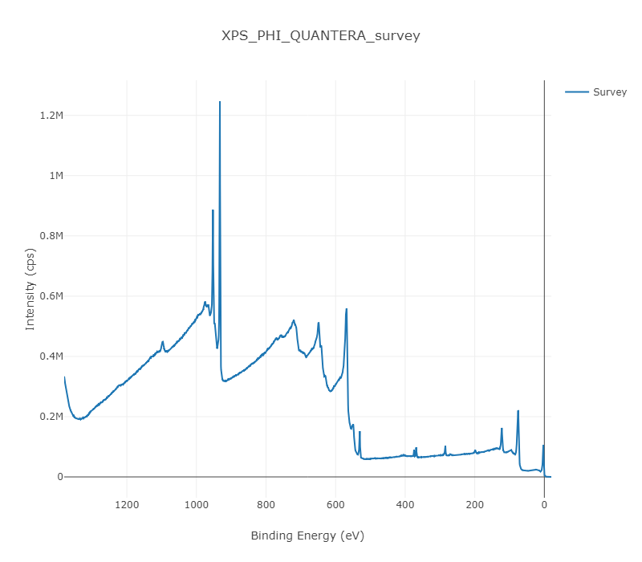

Usage of XPS tools for Jupyter Notebook¶
In [1]:
import subprocess
subprocess.run(["MPExport.exe", "-Filename:..\source\XPS_PHI_QUANTERA_survey.spe", "-TSV"])
Out[1]:
CompletedProcess(args=['MPExport.exe', '-Filename:..\\source\\XPS_PHI_QUANTERA_survey.spe', '-TSV'], returncode=0)
In [2]:
%run -i txt2csv.py "XPS_PHI_QUANTERA_survey.txt"
SPECTRUM
In [3]:
%run -i csv2graph.py "XPS_PHI_QUANTERA_survey.csv" --jupytermode

In [4]:
%run -i txt2raw_XPS_survey.py "XPS_PHI_QUANTERA_survey.txt" xps_raw_template.xml raw.xml --stdout
<?xml version="1.0" ?>
<metadata>
<meta key="Platform" type="String">PC</meta>
<meta key="Technique" type="String">XPS</meta>
<meta key="FileType" type="String">SPECTRUM</meta>
<meta key="FileDesc" type="String">MIDATA001</meta>
<meta key="SoftwareVersion" type="String">SS 3.6.1.16</meta>
<meta key="InstrumentModel" type="String">PHI Quantera SXM</meta>
<meta key="AcqFilename" type="String">C:\Datafiles\Butuzai\XPS_PHI_QUANTERA_survey.spe</meta>
<meta key="FileDate" type="String">2017 6 6</meta>
<meta key="AcqFileDate" type="String">2017 6 6</meta>
<meta key="Institution" type="String"></meta>
<meta key="Operator" type="String"></meta>
<meta key="ExperimentID" type="String">20170606</meta>
<meta key="AnalyserWorkFcn" type="String">4.250 eV</meta>
<meta key="PlatenID" type="String">MIDATA001</meta>
<meta key="PlatenDesc" type="String"></meta>
<meta key="PhotoFilename" type="String">MIDATA001.101.pho</meta>
<meta key="SXIFilename" type="String"></meta>
<meta key="SourceAnalyserAngle" type="String">45.0 d</meta>
<meta key="AnalyserSolidAngle" type="String">0.38 sr</meta>
<meta key="SputterIon" type="String">Ar+</meta>
<meta key="SputterCurrent" type="String">0.000 uA</meta>
<meta key="SputterEnergy" type="String">0.107 kV</meta>
<meta key="FloatVolt" type="String">-100.0 V</meta>
<meta key="SputterRaster" type="String">0.00 0.00 mm</meta>
<meta key="AnalyserMode" type="String">FAT</meta>
<meta key="SurvNumCycles" type="String">1</meta>
<meta key="NoSpectralReg" type="String">1</meta>
<meta key="SpectralRegDef" type="String">1 1 Su1s 111 2801 -0.5000 1380.0000 -20.0000 1379.0000 -19.0000 0.251496 280.00 AREA</meta>
<meta key="SpectralRegDef2" type="String">1 1400.0 7 0 2 1</meta>
<meta key="NoSpatialArea" type="String">1</meta>
<meta key="SpatialAreaDef" type="String">1 HP3 4 (-20651.4 -21601.7 24061.0 45.0 0.0) (-19251.4 -21601.7 24061.0 45.0 0.0) (-19251.4 -21501.7 24061.0 45.0 0.0) (-20651.4 -21501.7 24061.0 45.0 0.0)</meta>
<meta key="SpatialAreaDesc" type="String">1 #3 Cu foil</meta>
<meta key="XraySource" type="String">Al 1486.6 mono</meta>
<meta key="XrayPower" type="String">103.08 W</meta>
<meta key="XrayBeamDiameter" type="String">100.0 um</meta>
<meta key="XRayHighPower" type="String">yes</meta>
<meta key="NeutralizerCurrent" type="String">20.0 uA</meta>
<meta key="NeutralizerEnergy" type="String">1.40 V</meta>
<meta key="StagePosition" type="String">-20.1680 23.2019 24.0607 45.0000 0.0044</meta>
<meta key="ImageSizeXY" type="String">1400.0000 100.0000 Area</meta>
<column_num>1</column_num>
<column_name>condition</column_name>
</metadata>
In [5]:
%run -i raw2primary_XPS_survey.py raw.xml xps_primary_template.xml primary.xml --stdout
<?xml version="1.0" ?>
<metadata>
<meta key="Technique" type="String">XPS</meta>
<meta key="Instrument_model_identifier" type="String">PHI Quantera SXM</meta>
<meta key="Experiment_Identifier" type="Numeric">20170606</meta>
<meta key="Experiment_mode" type="String">SPECTRUM</meta>
<meta key="Year" type="Numeric">2017</meta>
<meta key="Month" type="Numeric">06</meta>
<meta key="Day" type="Numeric">06</meta>
<meta key="Analysis_source_beam_diameter" type="Quantity" unit="um">100.0</meta>
<meta key="Analysis_source_strength" type="String">103.08W_HP</meta>
<meta key="Analyser_mode" type="String">FAT</meta>
<meta key="Analyser_work_function" type="Quantity" unit="eV">4.250</meta>
<meta key="Analyser_axis_take_off_polar_angle" type="Quantity" unit="deg">45.0</meta>
<meta key="Analyser_acceptance_solid_angle" type="Quantity" unit="sr">0.38</meta>
<meta key="Analysis_region" type="String">Area</meta>
<meta key="Analysis_width_x" type="Quantity" unit="um">1400.0000</meta>
<meta key="Analysis_width_y" type="Quantity" unit="um">100.0000</meta>
<meta key="Species_label" type="String">Survey</meta>
<meta key="Transitions" type="String"></meta>
<meta key="Analyser_Pass_energy" type="Quantity" unit="eV">280.00</meta>
<meta key="Abscissa_start" type="Quantity" unit="eV">1380.0000</meta>
<meta key="Abscissa_end" type="Quantity" unit="eV">-20.0000</meta>
<meta key="Abscissa_increment" type="Quantity" unit="eV">-0.5000</meta>
<meta key="Collection_time" type="Quantity" unit="s">0.251496</meta>
<meta key="Measurement_Acquisition_Number" type="Numeric">1</meta>
<meta key="Peak_Sweep_Number" type="Numeric">7</meta>
<meta key="Number_of_scans" type="Numeric">7</meta>
<meta key="Comment" type="String">1 #3 Cu foil</meta>
<column_num>1</column_num>
<column_name>condition</column_name>
</metadata>
バッチ処理¶
上記のコマンドを一括して実行します。グラフと主要パラメータを表示します。
In [6]:
%run -i batch_exe_XPS.py "../source/XPS_PHI_QUANTERA_survey.spe" --jupytermode

<?xml version="1.0" ?>
<metadata>
<meta key="Technique" type="String">XPS</meta>
<meta key="Instrument_model_identifier" type="String">PHI Quantera SXM</meta>
<meta key="Experiment_Identifier" type="Numeric">20170606</meta>
<meta key="Experiment_mode" type="String">SPECTRUM</meta>
<meta key="Year" type="Numeric">2017</meta>
<meta key="Month" type="Numeric">06</meta>
<meta key="Day" type="Numeric">06</meta>
<meta key="Analysis_source_beam_diameter" type="Quantity" unit="um">100.0</meta>
<meta key="Analysis_source_strength" type="String">103.08W_HP</meta>
<meta key="Analyser_mode" type="String">FAT</meta>
<meta key="Analyser_work_function" type="Quantity" unit="eV">4.250</meta>
<meta key="Analyser_axis_take_off_polar_angle" type="Quantity" unit="deg">45.0</meta>
<meta key="Analyser_acceptance_solid_angle" type="Quantity" unit="sr">0.38</meta>
<meta key="Analysis_region" type="String">Area</meta>
<meta key="Analysis_width_x" type="Quantity" unit="um">1400.0000</meta>
<meta key="Analysis_width_y" type="Quantity" unit="um">100.0000</meta>
<meta key="Species_label" type="String">Survey</meta>
<meta key="Transitions" type="String"></meta>
<meta key="Analyser_Pass_energy" type="Quantity" unit="eV">280.00</meta>
<meta key="Abscissa_start" type="Quantity" unit="eV">1380.0000</meta>
<meta key="Abscissa_end" type="Quantity" unit="eV">-20.0000</meta>
<meta key="Abscissa_increment" type="Quantity" unit="eV">-0.5000</meta>
<meta key="Collection_time" type="Quantity" unit="s">0.251496</meta>
<meta key="Measurement_Acquisition_Number" type="Numeric">1</meta>
<meta key="Peak_Sweep_Number" type="Numeric">7</meta>
<meta key="Number_of_scans" type="Numeric">7</meta>
<meta key="Comment" type="String">1 #3 Cu foil</meta>
<column_num>1</column_num>
<column_name>condition</column_name>
</metadata>